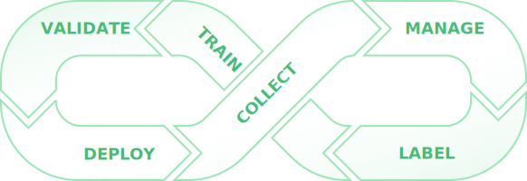

supported by


DATA INJECTION
MODEL DEPLOYMENT
Beta
EDGE-ML FLOW
Machine learning in minutes
Central to edge-ml is our
flow
- with a few simple steps edge-ml lets you record data, label samples, train models and deploy validated embedded machine learning directly on the edge.

1
void
setup() {
2 Recorder *rec = new Recorder("https://app.edge-ml.org", "API_KEY");
3 edgeRecorder = rec->getIncrementalRecorder("DATASET_NAME");
11 }
1 void loop() {
7 value = sensor.read();
8 edgeRecorder->addDataPoint("SENSOR_NAME", value);
11 }
2 Recorder *rec = new Recorder("https://app.edge-ml.org", "API_KEY");
3 edgeRecorder = rec->getIncrementalRecorder("DATASET_NAME");
11 }
1 void loop() {
7 value = sensor.read();
8 edgeRecorder->addDataPoint("SENSOR_NAME", value);
11 }
EDGE-ML CLIENTS
Simple data upload
edge-ml requires minimal initilization and supports upload in real-time as well as in bulk from the edge. Pre-recorded data can be simply drag-and-dropped as CSV files to the edge-ml cloud storage.
EDGE-ML AUTO
Find the best neural architecture
edge-ml AUTO performs neural architecture search to find the best neural network for your use case. The feature is currently only available to alpha users. Please reach out if you are interested.
| Framework | Peak Memory | Min. Latency | Max. Accuracy |
|---|---|---|---|
| TensorFlow Lite | 28860 B | 264 ms | 90.91 % |
| edge-ml AUTO | 7008 B | 49 ms | 95.9 % |
*evaluated on the UCI-HAR dataset.
Roadmap